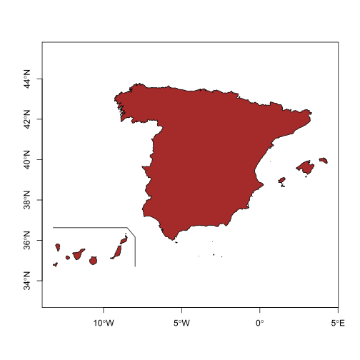
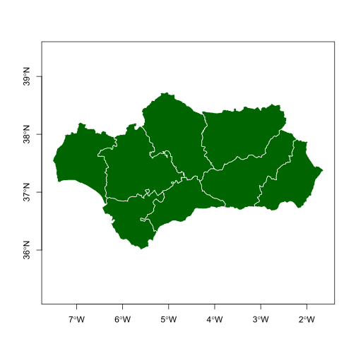
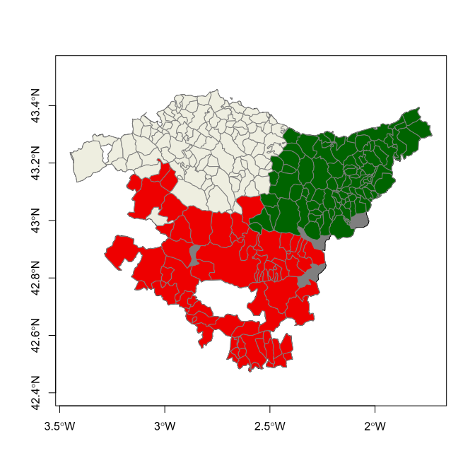

Introduction
mapSpain is a package designed to provide geographical information of Spain at different levels.
mapSpain provides shapefiles of municipalities, provinces, autonomous communities and NUTS levels of Spain. It also provides hexbin shapefiles and other complementary shapes, as the usual lines around the Canary Islands.
mapSpain provides access to map tiles of public organisms of Spain, that can be represented on static maps via mapSpain::esp_getTiles() or on a R leaflet map using mapSpain::addProviderEspTiles().
On top of that, mapSpain also has a powerful dictionary that translate provinces and other regions to English, Spanish, Catalan, Basque language or Galician, and also converts those names to different coding standards, as NUTS, ISO2 or the coding system used by the INE, that is the official statistic agency of Spain.
Caching
mapSpain provides a dataset and tile caching capability, that could be set as:
mapSpain relies on giscoR for downloading some files, and both packages are well synchronized, so if you already use giscoR and you have set your caching options for that package it would be recognized too by mapSpain.
Installation
Install mapSpain from CRAN:
install.packages("mapSpain")For installing the development version on (Github):
library(remotes)
install_github("dieghernan/mapSpain")Basic example
Some examples of what mapSpaincan do:
library(mapSpain)
library(sf)
#> Linking to GEOS 3.8.0, GDAL 3.0.4, PROJ 6.3.1
country <- esp_get_country()
lines <- esp_get_can_box()
plot(st_geometry(country), axes = TRUE, col = "brown")
plot(lines, add = TRUE)
# Plot provinces
Andalucia <- esp_get_prov("Andalucia")
plot(
st_geometry(Andalucia),
col = "darkgreen",
border = "white",
axes = TRUE
)
# Plot municipalities
Euskadi_CCAA <- esp_get_ccaa("Euskadi")
Euskadi <- esp_get_munic(region = "Euskadi")
# Add layers
plot(
st_geometry(Euskadi_CCAA),
col = "grey50",
axes = TRUE
)
plot(
Euskadi[, "cpro"],
pal = c("red2", "darkgreen", "ivory2"),
add = TRUE,
key.pos = NULL,
border = "grey50",
main = "Municipalities of the Basque Country"
)
Thematic maps
This is an example on how mapSpain can be used to create thematic maps. For plotting purposes we would use the cartography package, however any package that handles sf objects (e.g. ggplot2, tmap, leaflet, etc. could be used).
# Population density of Spain - Center
pop <- mapSpain::pobmun19
Spain <- esp_get_country()
munic <- esp_get_munic()
# Get area (km2)
municarea <- as.double(st_area(st_transform(munic, 3857)) / 1000000)
munic$area <- municarea
munic.pop <- merge(munic, pop, all.x = TRUE)
munic.pop$dens <- munic.pop$pob19 / munic.pop$area
library(cartography)
br <-
c(0,
10,
25,
100,
200,
500,
1000,
5000,
10000,
Inf)
pal <- hcl.colors(length(br) - 1, pal = "inferno", alpha = 0.7)
# Add layers
plot(st_geometry(Spain), col = pal[1], border = NA)
choroLayer(
munic.pop,
var = "dens",
breaks = br,
legend.pos = "n",
col = pal,
colNA = pal[1],
border = NA,
add = TRUE
)
plot(esp_get_can_box(), add = TRUE)
brlabs <- prettyNum(br, big.mark = ",")
brlabs[c(1, length(brlabs))] <- ""
legendChoro(
pos = "topleft",
breaks = brlabs,
col = pal,
title.txt = "Density Pop.\nkm2",
nodata = FALSE
)